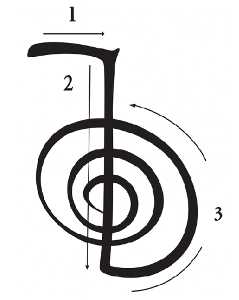
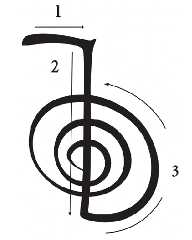

Una Nota Importante Sobre el Permiso
Antes de enviar Reiki a alguien que no te lo ha pedido, es fundamental pedir permiso. Si la persona puede dar su consentimiento, pregúntale. Si no puede (por estar inconsciente, por ejemplo), pide permiso a su Ser Superior o a su alma. Esto asegura que la energía sea recibida de la mejor manera y respeta el libre albedrío de cada ser.
Métodos de Envío
El envío a distancia es infinitamente creativo. La clave es tener un "foco" claro que represente al receptor. Aquí tienes las formas más comunes:
Con Foto
Un vínculo energético directo con la persona.
Con Papel
Escribir el nombre y la intención en un papel.
Con Sustituto
Usar un cojín o muñeco como representante.
Con Visualización
Imaginar a la persona o situación frente a ti.
Tu Cuerpo como Canal
Hacerte autotratamiento con la intención de que la energía fluya hacia la otra persona.
Aplicaciones Avanzadas
Sanación del Niño/a Interior
Envía Reiki a tu "yo" del pasado en momentos difíciles. Visualízate a esa edad, abrázate y envíale la energía de amor y sanación que necesitabas. Esto ayuda a liberar traumas y a integrar lecciones del pasado.
Sanación de Vínculos
Puedes enviar Reiki a la relación entre dos personas (incluyéndote a ti). Escribe los nombres en un papel y envía energía al vínculo para purificarlo, sanar heridas y fomentar la armonía y el entendimiento.
Manifestar Proyectos
Envía Reiki al futuro de un proyecto, meta o sueño. Esto ayuda a limpiar obstáculos energéticos y a alinear las vibraciones para su concreción. Importante: Reiki apoya tu camino, pero no reemplaza la acción. ¡La energía acompaña tu trabajo en el plano físico!
Práctica Guiada de Envío a Distancia
Paso 3: Conecta y Visualiza los Símbolos
 

Paso 4: Envía la Energía
Enviando a...
Envío Completado
Confía en el proceso y agradece la energía recibida y enviada.
Gassho 🙏